Фантазия – драгоценный дар природы; она дана человеку для спасения от монотонной повседневности, от негативных эмоций и от «амортизации сердца и души», как сказал Поэт. Художник, фантазируя, творит небывалые картины потустороннего мира: плоды воображения, сцены из сновидений, сказок и мифов. Одним из разновидностей фэнтези является гротеск – мрачно-комическая разновидность фантазии, нечто вроде юмора гробовщиков.
Юрий Тореев обладает неиссякаемым даром фантазии. Его произведения в этом жанре бесконечно разнообразны: по сюжетам, сложности рисунка, по технике исполнения и колориту; в каждой работе заложена некая мысль, идея, вопрос, или просто шутка.
Работы этого цикла трудно поддаются систематизации, но всё же постараемся это сделать.
Бессознательное.
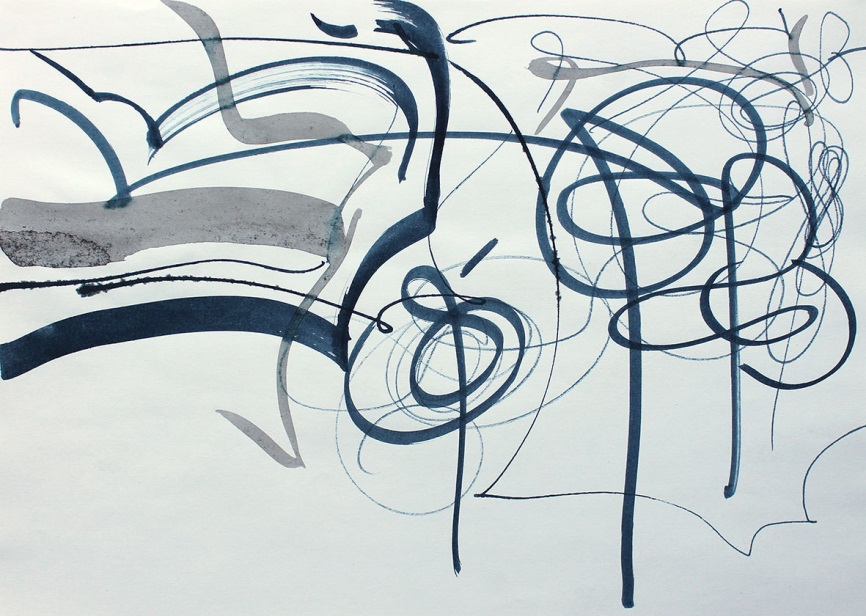
78
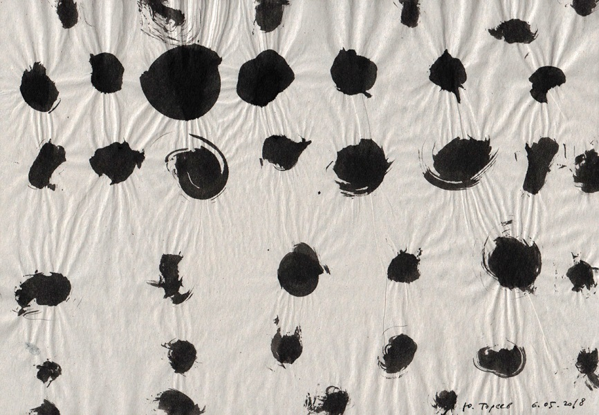
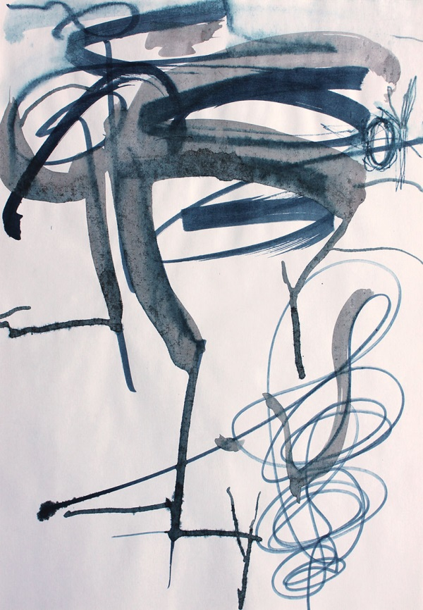
Рука Художника наносит на бумагу линии, точки, пятна – как бы сама по себе, без какого-либо замысла. «Перо, забывшись, не рисует/ Близ неоконченных стихов / Ни дамских ножек, ни голов». (А.Пушкин)
Инфантилизм.
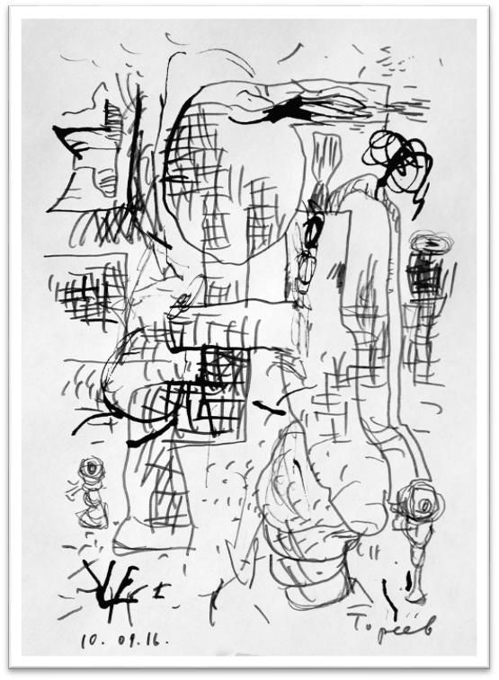
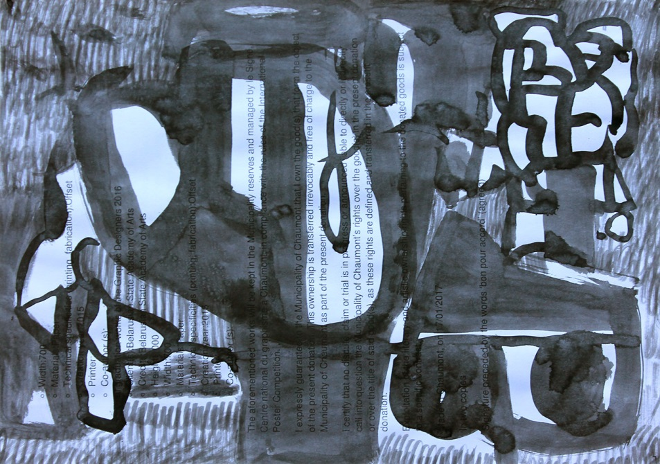
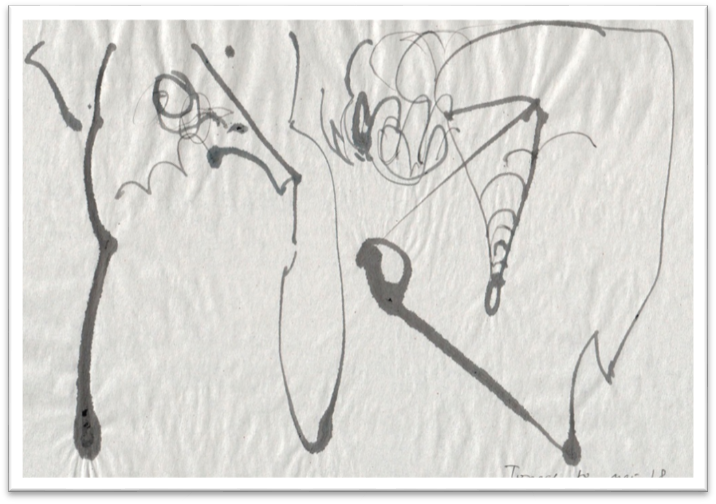
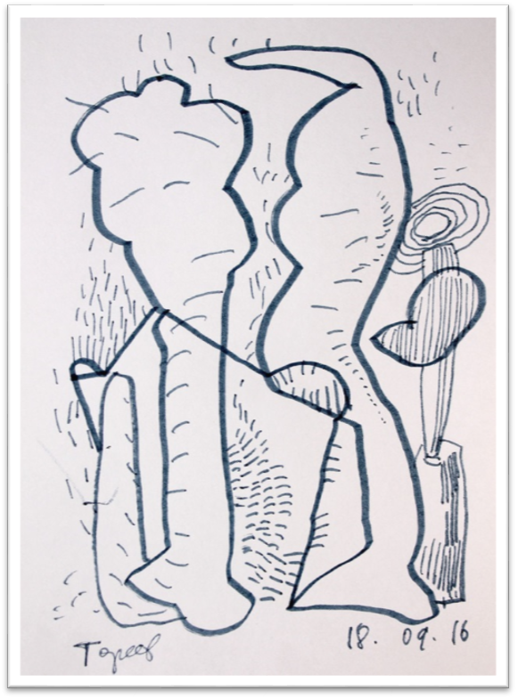
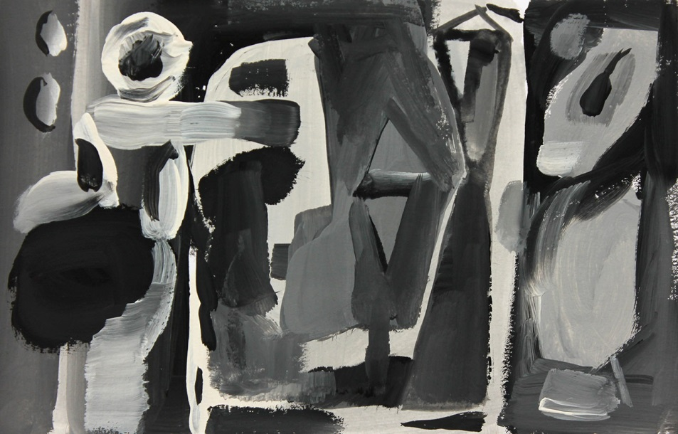
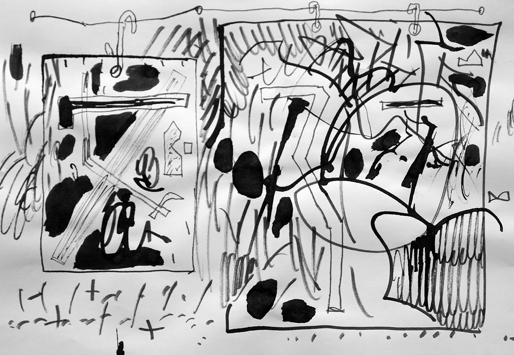
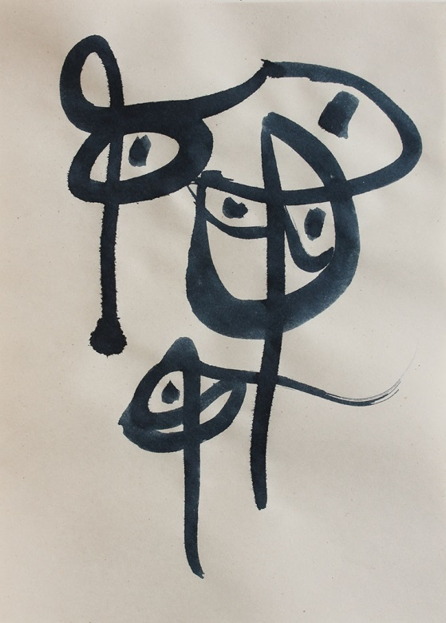
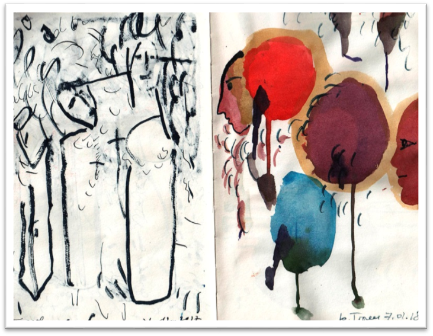
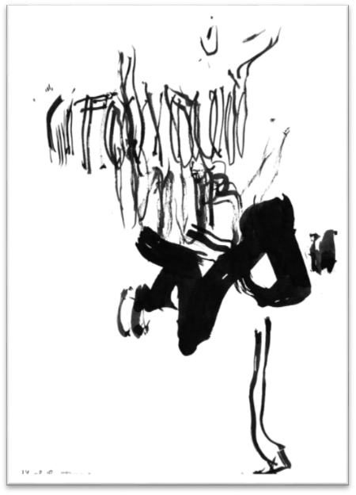
Художник как бы «впадает в детство»: рисует понарошек – фантастические существа, непохожие ни на кого. «И напоследок впасть, как в ересь, / В неслыханную простоту…».
Ребус, загадка
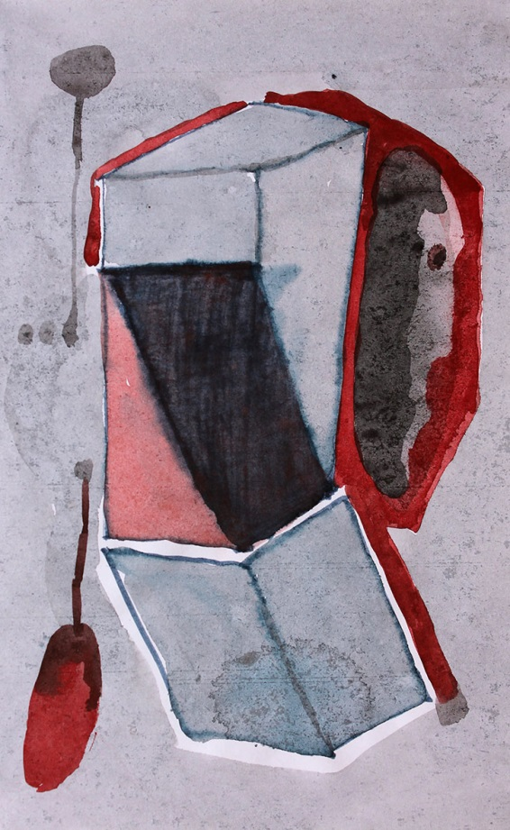
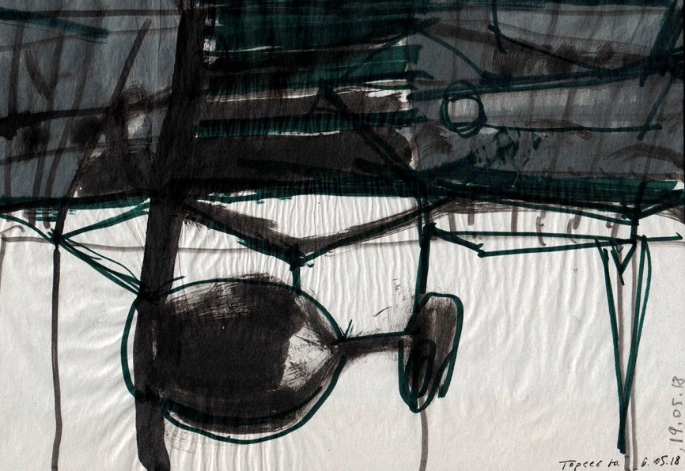
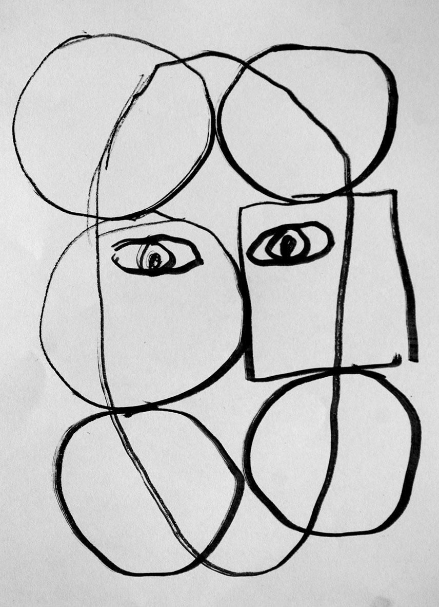
Иной раз не хватает воображения, чтобы назвать по имени тот или иной рисунок. Что ж – бывают и такие задачи, у которых нет решения (принципиально). А иногда загадочность вещи придаёт ей обаяние.
Абсурды и гротески
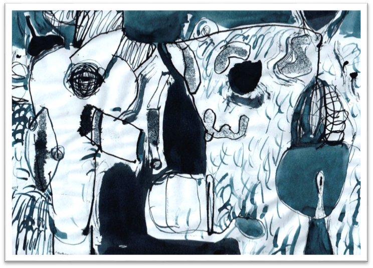
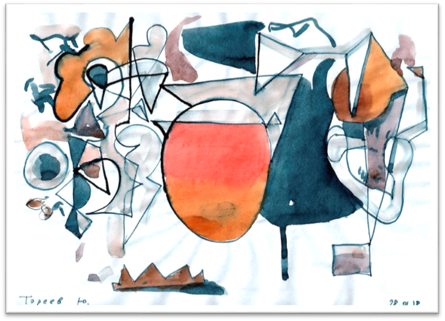
Классики мировой литературы убедили нас, что насельники Преисподней тоже иногда веселятся, но их веселье – разнузданное и хмельное, пополам с отчаянием.
Картины ада 181, 138, 126, 127 (2017), 184 (2018), 265, 266, 271, 268, 280, 284, 285 (2017) 181 138 126 127 184 265 266 271 268 280 284 285
Человек переживает своё бытие только на Земле, но неуёмное любопытство заставляет его посещать запретные места – Рай и Ад, хотя бы в своём воображении. Ему помогают в этом великие поэты: Вергилий, Данте, Гёте, Маяковский…, а также многие художники.
Свою «адскую эпопею» создал также Ю.Тореев. Серию рисунков на эту тему можно назвать «Сцены из бытия Преисподней», но можно и так: «Состояние духа Мастера в трудные моменты жизни», или короче: «Как тяжело на свете жить!» (слова из песни в исполнении Л.Утёсова. Впрочем, там поётся «хорошо», а не «тяжело», но второе ближе к реальности). Фобос и Деймос (сцены из жизни адских обитателей) 215, 220, 221, 222, 223 (2018), 243 (2017), 147, 148, 149 (2018) 215 220 221 222 223 243 147 148 149
Не позавидуешь грешникам, попавшим в Ад. Они познают здесь страшные сны (220), белую смерть и чёрную гибель (221), обломки мрачных мыслей и осколки чувств. Им суждено увидеть адского монстра верхом на сколопендре (223) и погибнуть вторично в Судный День, когда свершится смешение Неба и Земли. Если бы знал самоубийца, что его ждёт за гробом! (215). Он бы не торопился на тот свет. Что побуждает человека прежде времени уходить из жизни?
Прежде всего – страх. Если спросить homo sapiens: чего ты боишься? Он, пожалуй, не сумеет дать определённый ответ. Может быть (с большой долей вероятности), он боится всего. Это так называемое экзистенциальное чувство, данное Природой человеку для его самосохранения (инстинкт). Источником опасности может быть всё, что угодно: укол иголки, глоток воды, попавшей не в то горло, скользкая лужа под ногами… Особенно пугает что-то непонятное, бесформенное, тёмное (153, 154, 157, 126, 56, 127).
Многие люди на основании своего жизненного опыта склонны к пессимизму – они видят жизнь почти исключительно в чёрных красках (159, 163, 164, 165 (2018). Как помочь этим людям? Один из способов – показать им точное изображение их душевной болезни (нездоровья) – и тем самым как бы удалить эту болезнь (хотя бы на время). 159 163 164 165
Ещё кое – что о Преисподней. 262 (2018)
Карта военных действий Диавола: чёрные пятна – очаги поражения смертельными болезнями. 277 (2018)
Адская лаборатория.
Многие люди на основании своего жизненного опыта склонны к пессимизму – они видят жизнь почти исключительно в чёрных красках (159, 163, 164, 165). Как помочь этим людям? Один из способов – показать им точное изображение их душевной болезни (нездоровья) – и тем самым как бы удалить эту болезнь (хотя бы на время). 263 (2018)
Адский беспорядок. Всё валяется, как попало. 261 (2018)
Венец творения – адская красавица; никогда не умывается и подмигивает левым глазом. Привет! Замечание. Автор этого текста употребил приём метафоры: описывая сцены из бытия Преисподней, он (автор) имел в виду душевное состояние своего героя – Ю.Т., поскольку рисунки красноречиво высказывались на эту тему.
Л. Н. Миронова, А. В. Королева
26.08.2018